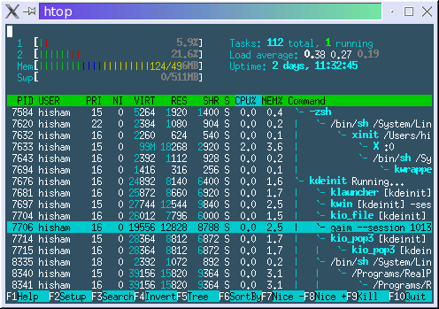

Random tech links
This is an archived post
Previous
Index
Next
Alternatives to top
April 16 2010, 3:15 AM
by Alexey Shamrin
Htop
(via
HN
):

Atop
("atop uses color to show when a subsystem goes over warn/critical threshold. it can be run in present time, or can be used to go back in time and "play back the tape
"):
Tags
unix
533 views and 0 responses